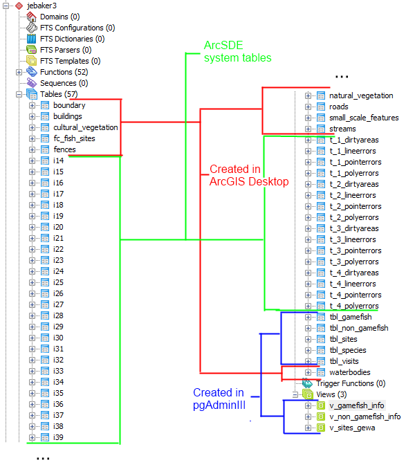

Geodatabase Design
While the tabular databases we worked with at the beginning of the course can be incorporated into geospatial analysis in a variety of methods, databases can be used to store geometries of spatial objects as well. A spatially enable database, also called a geodatabase, usually also contains tabular elements as well. But by combining all of the data associated with a project in a single location, a number of advantages can be realized. Data organization is easier, data access may be faster, and data can be more readily shared between applications and across systems. Choosing the appropriate type of geodatabase is critical to good data management.
ESRI Training
To better understand the issues related to this unit, I completed three online courses through ESRI. They were Getting Started with the Geodatabase, Getting Started with Geodatabase Topology, and Working with Geodatabase Domains and Subtypes. Please click the hyperlinks to view copies of my completion certificates. These courses helped explain the basics of each topic and prepared us for the course assignments.
Feature Datasets and Feature Classes
Feature datasets and feature classes are the basic geometery management concepts for storing and organizing data inside of a geodatabase. A feature class is the database equivalent of a shapefile used within a traditional file system. While there may be multiple tables and table parts which describe the geometry and properties within the database itself, to the end user working in an ESRI environment only a single element representing the geometry is shown. A feature dataset is roughly the equivalent of a file system's folder, and enable the user to better organize his or her geometries. Below is an example illustrating the organization of a database we created containing various geometries of the George Washington Birthplace National Monument.
Topological Concepts
Database topology describes the spatial relationships between feature classes in a geodatabase, allowing the user to define expected relationships between objects in order to correct errors and better identify exceptions. For the example database above, we were asked to define a number of topological relationships. Some of the relationships I defined are highlighted below.
I created at least one topology rule for each feature dataset. For the boundary topology, I applied the simple rule that it must not overlap. Even though the park boundaries may contain multiple parts, if the parts were to overlap there would clearly be an error present.
Within the structures feature dataset, I created two rules. One, that fences must not overlap (because it is physically very unlikely that one fence would be built on top of another), and two, that buildings must not overlap with roads (because this is also physically unlikely). There was one error detected upon validation of a fence feature overlapping itself. There were also two errors detected of a building errantly falling upon a road; though the overlap was of less than a foot, probably either the road or the building boundary should be corrected to reflect the correct location of each.
Within vegetation, I created a rule that natural vegetation must not overlap; if there were an overlap, it would probably be due to a drawing error, even though some overlap in coverage could make logical sense. And within water, I created a rule that stream must be single part; a two- or more part stream could indicate that an unintentional gap was left in what logically should be a continuous flow of water.
This is by no means an exhaustive list of possible topological relationships and rules which might be created for George Washington Birthplace National Monument. Someone more familiar with the data and the data needs of the park would be able to define many more additional relationships that would benefit them, as well as determining which would be most useful to employ.
Single-User Geodatabases
Single user databases are generally best used for organizing data for one person working on a desktop system without sharing. While a single user database can be shared with others, it does not allow for concurrent editing. But unlike a multi-user database, it is comparatively simple to set up and does not require a server environment to use. The two types of single user geodatabases in an ESRI environment are file geodatabases and personal geodatabases. The former is a proprietary format, but allows for larger databases to be constructed and seems to have better support from ESRI. The latter is essentially a spatially-enabled Microsoft Access database, which may be simpler to use but it seems that ESRI may be moving away from supporting this type of database. It is important to be familiar with them, though, as there may be existing databases in this format that a GIS practitioner may encounter and need to work with.
Multi-User Geodatabases
Multi-user geodatabases are considerably more complex, as they integrate components across multiple systems (though occasionally you may run all components locally). However, they allow for considerably more flexibility. They enable concurrent editing by multiple users, and may serve as the backend for a web-based GIS delivery system as we explored later in the course. Below is the diagram describing the system configuration we used in this course. This diagram shows the isolation between the client users (who may be using desktop or web based software) and the database backend, which is typically an SQL server (which may or may not handle its own storage technology). Middleware called ArcSDE enables communication between the SQL server and the ArcGIS Server, which serves out web-based applications to users, as well as ArcIMS to share the geodata as a service. In our case, our SQL server, ArcSDE, and ArcGIS Server were hosted on the same machine, but this is not always the case.

(click to enlarge)
The ESRI software simplifies the view of the data somewhat, removing some transparency but making access to the correct data store much easier to the user. Below is an image of all of the tables related to our example database, as show in PgAdmin III, with the source of each table demarcated.

Below is the same database as shown in ArcGIS Desktop. You can see that it is considerably simplified, as the geometries are shown in a logical format rather than just as the tables which contain them.
Reflection
This section of the course really reformed my personal practice in maintaining geospatial data. While certainly the work with multiuser databases will be useful in larger enterprise situations, even just rethinking the way I manage data on my personal machine has been helpful. I have worked on a number of projects using a similar dataset, and up until now had largely kept a set of disorganized shapefiles strewn around my hard drive. I knew how to import them into a geodatabase, but never took the time until taking this course because I didn't see the advantage. But now that I have done so, portability has become much easier, organization has improved by using feature datasets, and I've even begun to think about ways that I can use topological relationships for my work. Since much of the time I am working with data from multiple agencies, topological relationships could conceivably help me identify they areas where the data does not match up as expected - for example, where transit route lines don't follow street centerlines as they should logically, and begin to correct any problems.